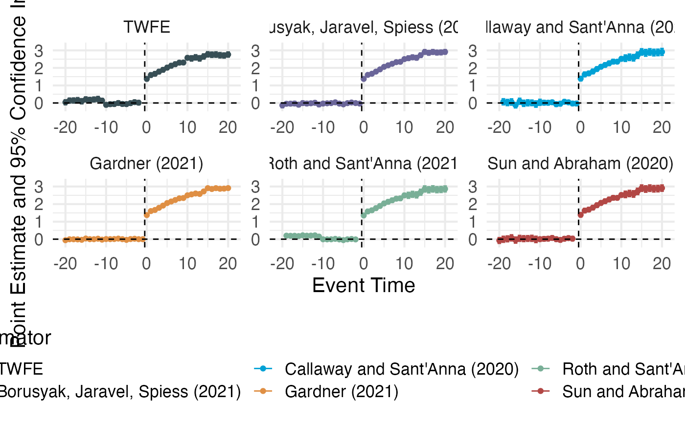

Estimate event-study coefficients using TWFE and 5 proposed improvements.
event_study.RdUses the estimation procedures recommended from Borusyak, Jaravel, Spiess (2021); Callaway and Sant'Anna (2020); Gardner (2021); Roth and Sant'Anna (2021); Sun and Abraham (2020)
Usage
event_study(
data,
yname,
idname,
gname,
tname,
xformla = NULL,
weights = NULL,
estimator = c("all", "TWFE", "did2s", "did", "impute", "sunab", "staggered")
)
plot_event_study(out, separate = TRUE, horizon = NULL)Arguments
- data
The dataframe containing all the variables
- yname
Variable name for outcome variable
- idname
Variable name for unique unit id
- gname
Variable name for unit-specific date of initial treatment (never-treated should be zero or NA)
- tname
Variable name for calendar period
- xformla
A formula for the covariates to include in the model. It should be of the form
~ X1 + X2. Default is NULL.- weights
Variable name for estimation weights. This is used in estimating Y(0) and also augments treatment effect weights
- estimator
Estimator you would like to use. Use "all" to estimate all. Otherwise see table to know advantages and requirements for each of these.
- out
Output from
event_study()- separate
Logical. Should the estimators be on separate plots? Default is TRUE.
- horizon
Numeric. Vector of length 2. First element is min and second element is max of event_time to plot
Value
event_study returns a data.frame of point estimates for each estimator
plot_event_study returns a ggplot object that can be fully customized
Examples
# \donttest{
out = event_study(
data = did2s::df_het, yname = "dep_var", idname = "unit",
tname = "year", gname = "g", estimator = "all"
)
#> ℹ Note these estimators rely on different underlying assumptions. See Table 2 of <https://arxiv.org/abs/2109.05913> for an overview.
#> Estimating TWFE Model
#> Estimating using Gardner (2021)
#> Estimating using Callaway and Sant'Anna (2020)
#> Estimating using Sun and Abraham (2020)
#> Estimating using Borusyak, Jaravel, Spiess (2021)
#> Estimating using Roth and Sant'Anna (2021)
plot_event_study(out)

# }